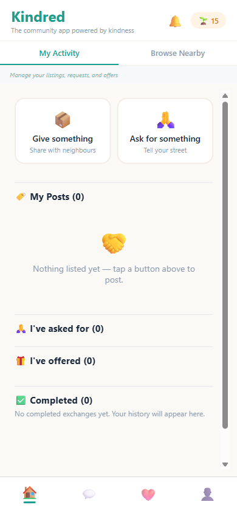

Kindred
Your street's full of useful things.
Kindred
the community app
powered by kindness
powered by kindness
Give what you've got.
Ask for what you need.
Find local help.
No money.
No ads.
No algorithm.
Just local.

+1
Kindred
Free for every street
in New Zealand.
in New Zealand.
kindred-nz.org